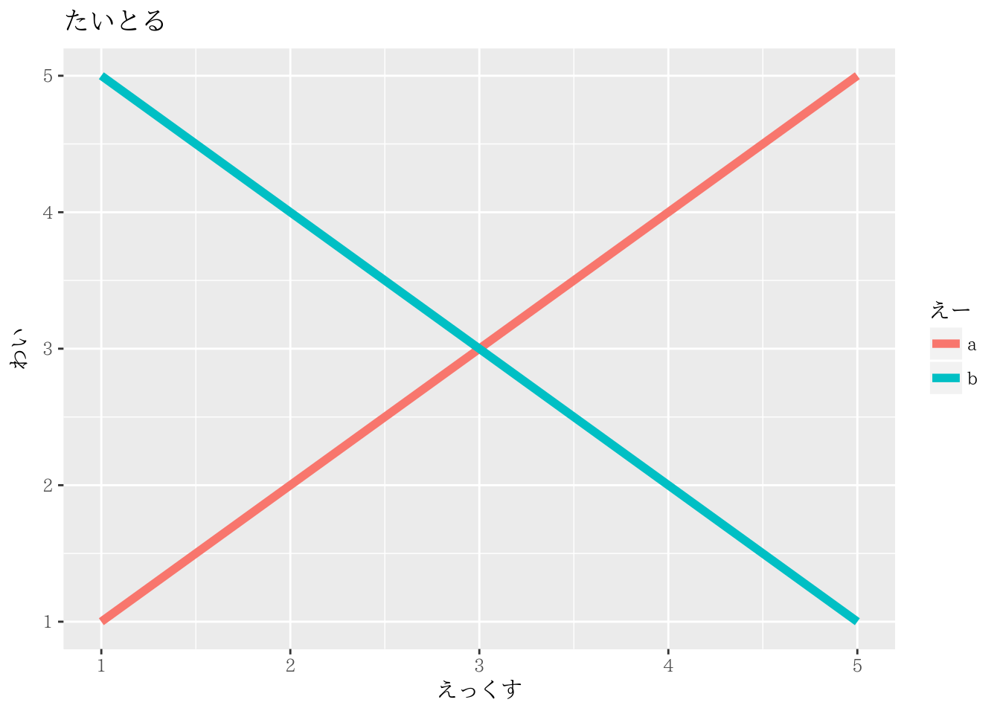
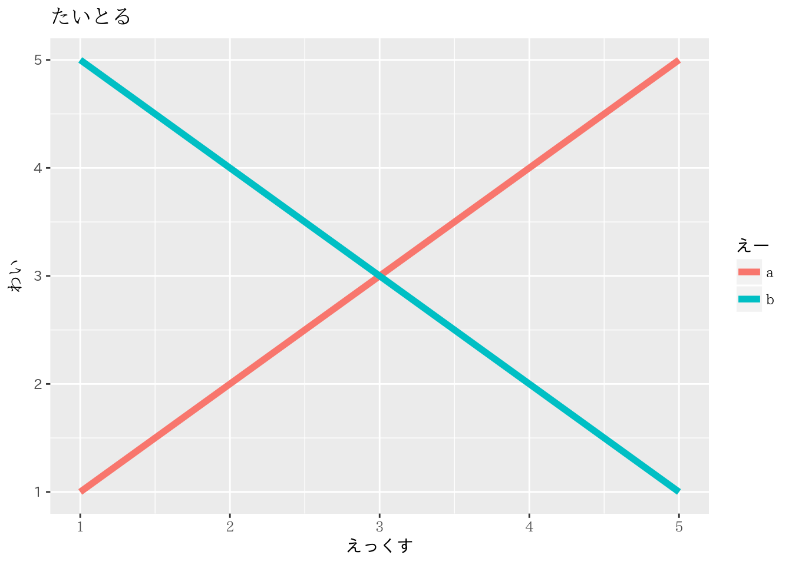

Q: 3 ggplot2で日本語フォントを指定したい
3.1 Q
ggplot2で日本語のフォントを指定したいです。
3.2 A
基本はtheme()レイヤーでフォントを設定したい部分を指定しながら設定していきます。ただ、ggplot2の古いバージョンによってはうまく動かない可能性があります。ここではv2.1.0以降を念頭に説明します。
指定するフォントを先に変数に入れておきます。今回のコードではこのフォント名を差し替えてもらえればいいかと思います:
font_A <- "IPAexMincho"
font_B <- "IPAexGothic"なお、フォント名については、各実行環境で様々なので省略します。
3.2.1 テーマとして日本語のフォントを指定する
そのプロット全体にテーマフォントとしてフォント指定する場合は、`theme(text = element_text(“FontName”))とフォントを指定すればOKです:
library(ggplot2)
d <- data.frame(X=rep(1:5, 2), Y=c(1:5, 5:1), A=rep(c('a','b'), each=5))
ggplot(data=d, aes(x=X, y=Y, group=A, color=A)) +
geom_line(size=2) +
labs(x="えっくす", y="わい", color="えー", title="たいとる") +
theme(text = element_text(family = font_A))
このelement_text()関数の第一引数はfamily=なので、いきなりフォント名を当ててもOKです。詳しくは?elemet_textでヘルプを確認してください。
3.2.2 個別にフォント指定
個別に設定する場合は、theme()内の引数にaes属性を指定してelement_text()を渡します:
ggplot(data=d, aes(x=X, y=Y, group=A, color=A)) +
geom_line(size=2) +
labs(x="えっくす", y="わい", color="えー", title="たいとる") +
theme(text = element_text(family = font_A),
axis.title.x = element_text(family = font_B))上の例では、全体設定でfontA(IPAMincho)を設定し、x軸のタイトルを個別にfontB(IPAGothic)に設定しています。どの属性にどの属性に与えるかは、以下のリンクにある公式ドキュメントを参照してください:
http://docs.ggplot2.org/current/theme.html
このリンク先で、element_textが設定できる要素について設定できます。主なものを記述した例です:
ggplot(data=d, aes(x=X, y=Y, group=A, color=A))+
geom_line(size=2) +
labs(x="えっくす", y="わい", color="えー", title="たいとる") +
theme(text = element_text(family = font_A), #全体設定
title = element_text(family = font_B), #プロット、軸、凡例のタイトル全体設定
axis.title = element_text(family = font_A), #軸タイトルの全体設定
axis.title.x = element_text(family = font_B), #x軸のタイトル設定
axis.text = element_text(family = font_A), #軸テキスト(目盛りなど)の全体設定
axis.text.y = element_text(family = font_B), #y軸テキストの設定
legend.text = element_text(family = font_A), #凡例テキストの設定
legend.title = element_text(family = font_B), #凡例タイトルの設定
plot.title = element_text(family = font_A) #プロットタイトルの設定
) 